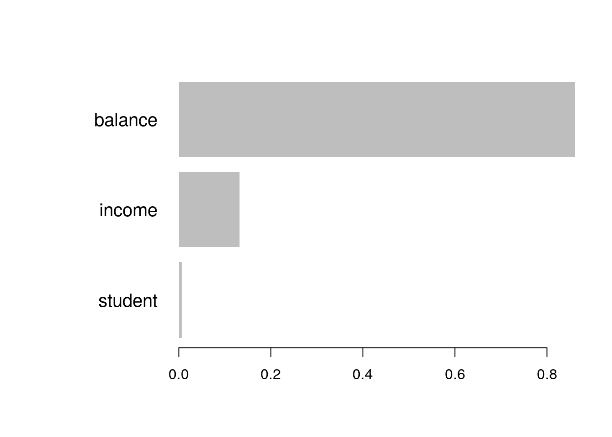
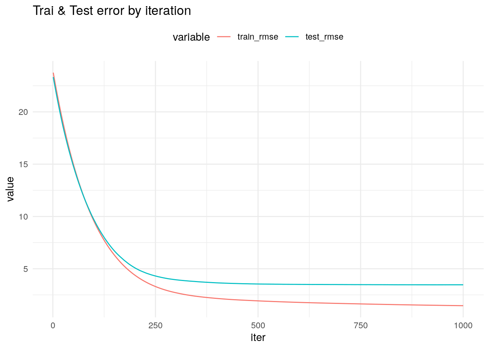
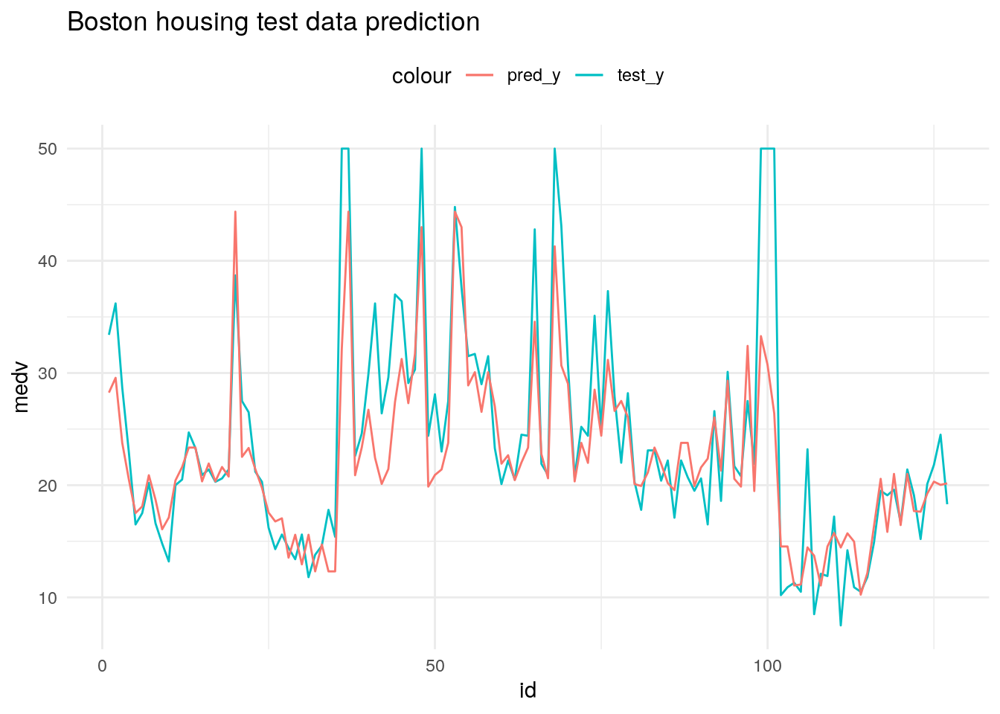

library(tidyverse)
library(ISLR)
library(xgboost)23 XGBoost & LightGBM
Thuật toán XGBoost & LightGBM - thuộc họ các thuật toán cây (tree based methods). XGBoost ra đời từ năm 2014 và nhanh chóng trở thành thuật toán được sử dụng rộng rãi cho nhóm các bài toán với dữ liệu dạng bảng (tabular data). Đến năm 2016, Microsoft đưa ra thuật toán lightgbm giúp cải thiện tốc độ dự báo của mô hình.
Đây là 2 thuật toán quan trọng cần nắm vững để có thể ứng dụng rộng rãi trong các bài toán dự báo.
23.1 XGBoost
XGBoost, viết tắt của Extreme Gradient Boosting, là thuật toán thuộc nhóm cây quyết định áp dụng gradient boosting để tối ưu hóa mô hình. xgboost có thuật toán gần tương tự với gbm nhuwnng tập trung nhiều hơn vào regularization. Do đó, mô hình xgboost hạn chế được vấn đề overfitting trong xây dựng mô hình.
Khác với dữ liệu đầu vào thông thường, xgboost yêu cầu dữ liệu đầu vào như sau.
- Chỉ dự báo với biến số - do đó các biến
factorphải chuyển sang sang số - Dữ liệu đầu vào của XGBoost chia làm các dạng:
Dense matrix: Lưu trữ tất cả dữ liệu dưới dạngmatrixSparse matrix: Chỉ lưu dữ liệu khác 0.xgb.DMatrix: Định dạng dữ liệu riêng củaxgboost- được khuyến nghị sử dụng trong xây dựng mô hình.
x <- c(rep(NA, 3), rnorm(3, 4), rep(0,10))
# Dense Matrix
m1 <- matrix(x, nrow = 4, ncol = 4)
# Sparse Matrix
m2 <- m1 %>% as("sparseMatrix")
m24 x 4 sparse Matrix of class "dgCMatrix"
[1,] NA 3.771838 . .
[2,] NA 3.756701 . .
[3,] NA . . .
[4,] 3.234668 . . .# xgb.DMatrix
m3 <- xgb.DMatrix(data = m1, label = c(1,0,1,0))
m3 %>% class[1] "xgb.DMatrix"# dgCMatrix
m4 <- list(data = m1 %>% as("dgCMatrix"), label = c(1,0,1,0))
m4$data
4 x 4 sparse Matrix of class "dgCMatrix"
[1,] NA 3.771838 . .
[2,] NA 3.756701 . .
[3,] NA . . .
[4,] 3.234668 . . .
$label
[1] 1 0 1 0Khi xây dựng mô hình, xgboost có 3 nhóm hàm xây dựng mô hình:
xgboost: Xây dựng mô hình đơn giảnxgb.cv: Xây dựng mô hình với cross-validation, hỗ trợtuningxgb.train: Xây dựng mô hình với các tính năng nâng cao như đánh giá chất lượng trên tập test,… Hàm này bắt buộc dữ liệu đầu vào ở dạngxgb.Dmatrix
23.1.1 Tham số trong mô hình
23.1.1.1 Các tham số cơ bản
booster[default = gbtree]: Thuật toán sử dụng trongxgboost.gbtree: Sử dụng cây quyết địnhgblinear: Sử dụng hàm tuyến tính
Với bài toán phân loại, sử dụng gbtree. Với bài toán hồi quy, có thể sử dụng bất kỳ thuật toán nào.
nthread: Số lượng cores được sử dụng khi chạyparallel computing.silent[default = 1]: Hiển thị kết quả chạy mô hình trên console
23.1.1.2 Tham số cho tree booster
nrounds[default=100]: Số lượtiterationkhi xây boosting, đây chính là số cây quyết định được tạo trong mô hình. Cần tối ưu quaxgb.cveta[default=0.3][range: (0,1)]: Tốc độlearning rate, giá trị càng nhỏ thì thời gian tính toán càng lâu. Khi giá trị củaetathấp, ta cần tăng số lượngnroundsđể đạt giá trị tối ưu.etathường sử dụng trong khoảng0.01-0.3gamma[default=0][range: (0,Inf)]: Tham số hỗ trợregularizationđể giảm thiểuoverfitting. Giá trịgammacàng lớn, sai số giữa tậptrainvàtestcàng thấp. Khi sử dụngxgb.cv, nếu sai số giữatrainvàtestlớn, ta cần đưa tham sốgammavào mô hình.gammahoạt động tốt với các cây quyết định đơn giản (max_depthcó giá trị nhỏ). Mộtnodesẽ chỉ được tách tiếp nếuloss functionđược giảm một lượng tối thiểugammamax_depth[default=6][range: (0,Inf)]: Tham số quyết định số tầng của cây. Giá trị càng lớn, khả năngoverfittingcàng lớn. Tham số cần được tối ưu quaxgb.cvmin_child_weight[default=1][range:(0,Inf)]: Số lượng quan sát tối thiểu cho mỗi nodesubsample[default=1][range: (0,1)]: Tỷ lệ quan sát có trong mỗi cây quyết định. Thông thường có giá trị trong khoảng (0.5-0.8)colsample_bytree[default=1][range: (0,1)]: Tỷ lệ số biến được sử dụng trong cây quyết định, thường có giá trị trong khoảng (0.5,0.9)lambda[default=0]: L2 regularizationalpha[default=1]: L1 regularization
23.1.1.3 Tham số cho Linear Booster
gblinear có ít tham số tuning hơn gbtree rất nhiều. Do đó, với các bài toán hồi quy, ta nên sử dụng để tăng tốc độ tuning
nrounds[default=100]lambda[default=0]alpha[default=1]
23.1.1.4 Tham số cho các bài toán khác nhau
Với các bài toán khác nhau, tham số mục tiêu trong mô hình cũng sẽ thay đổi theo.
objective = "binary:logistic": Phân loại 2 nhómobjective = "multi:softmax": Phân loại nhiều nhóm, kết quả trả ra nhãn (label) của mỗi class. Yêu cầu có thêm tham sốnum_classobjective = "multi:softprob": Phân loại nhiều nhóm, trả ra xác suất của mỗi nhómobjective = "reg:linear: Mô hình dự báo regression
Các tham số đánh giá chất lượng mô hình khi tuning
mae– Mean Absolute Error (regression)logloss– Negative loglikelihood (classification)auc– Area under curve (classification)rmse– Root mean square error (regression)error– Binary classification error rate [#wrong cases/#all cases]mlogloss– multiclass logloss (classification)
23.1.2 Sử dụng xgboost cơ bản
23.1.2.1 Phân loại 2 nhóm
data("Default")
Default %>% head default student balance income
1 No No 729.5265 44361.625
2 No Yes 817.1804 12106.135
3 No No 1073.5492 31767.139
4 No No 529.2506 35704.494
5 No No 785.6559 38463.496
6 No Yes 919.5885 7491.559Dữ liệu đầu vào của xgboost cần phải đảm bảo hai yếu tố:
- Toàn bộ dữ liệu cần có định dạng số
- Dữ liệu đầu vào dạng
matrix
Do đó, toàn bộ dữ liệu factor phải biến đổi thành matrix như sau
convert_fct <- function(x){
x <- x %>% as.numeric
x <- x - 1
return(x)
}
Default <- Default %>%
modify_if(is.factor, convert_fct)
Default %>% summary default student balance income
Min. :0.0000 Min. :0.0000 Min. : 0.0 Min. : 772
1st Qu.:0.0000 1st Qu.:0.0000 1st Qu.: 481.7 1st Qu.:21340
Median :0.0000 Median :0.0000 Median : 823.6 Median :34553
Mean :0.0333 Mean :0.2944 Mean : 835.4 Mean :33517
3rd Qu.:0.0000 3rd Qu.:1.0000 3rd Qu.:1166.3 3rd Qu.:43808
Max. :1.0000 Max. :1.0000 Max. :2654.3 Max. :73554 index <- sample(1:nrow(Default), 0.75 * nrow(Default))
# Chia tập train test
train <- Default[index, ]
test <- Default[-index, ]
train %>% str'data.frame': 7500 obs. of 4 variables:
$ default: num 0 0 0 0 0 0 0 0 0 0 ...
$ student: num 0 0 0 0 0 1 0 1 0 0 ...
$ balance: num 687 594 562 375 950 ...
$ income : num 34434 28723 63795 32531 37486 ...Training model
# Cách 1: Biến đổi dữ liệu trực tiếp matrix từ DataFrame
xgb_model <- xgboost(data = train %>% select(-default) %>% as.matrix,
label = train %>% pull(default),
max_depth = 2,
eta = 0.1, #step size of each boosting step = control the learning rate
nrounds = 5,
objective = "binary:logistic") #binary classification model[1] train-logloss:0.606435
[2] train-logloss:0.535445
[3] train-logloss:0.476323
[4] train-logloss:0.426430
[5] train-logloss:0.383893 xgb_model##### xgb.Booster
raw: 8.5 Kb
call:
xgb.train(params = params, data = dtrain, nrounds = nrounds,
watchlist = watchlist, verbose = verbose, print_every_n = print_every_n,
early_stopping_rounds = early_stopping_rounds, maximize = maximize,
save_period = save_period, save_name = save_name, xgb_model = xgb_model,
callbacks = callbacks, max_depth = 2, eta = 0.1, objective = "binary:logistic")
params (as set within xgb.train):
max_depth = "2", eta = "0.1", objective = "binary:logistic", validate_parameters = "TRUE"
xgb.attributes:
niter
callbacks:
cb.print.evaluation(period = print_every_n)
cb.evaluation.log()
# of features: 3
niter: 5
nfeatures : 3
evaluation_log:
iter train_logloss
1 0.6064355
2 0.5354452
3 0.4763226
4 0.4264298
5 0.3838929# Cách 2: Biến đổi thành Dmatrix
dtrain <- xgb.DMatrix(data = train %>%
select(-default) %>% as.matrix,
label = train %>% pull(default) %>% as.matrix)
dtest <- xgb.DMatrix(data = test %>% select(-default) %>% as.matrix,
label = test %>% pull(default) %>% as.matrix)
getinfo(dtrain, "label") %>% head[1] 0 0 0 0 0 0xgb_model2 <- xgb.train(data = dtrain,
nround = 20,
watchlist = list(train = dtrain, test = dtest),
objective = "binary:logistic")[1] train-logloss:0.458132 test-logloss:0.460442
[2] train-logloss:0.328067 test-logloss:0.333125
[3] train-logloss:0.246276 test-logloss:0.252880
[4] train-logloss:0.192078 test-logloss:0.199905
[5] train-logloss:0.155093 test-logloss:0.163729
[6] train-logloss:0.128696 test-logloss:0.139804
[7] train-logloss:0.109880 test-logloss:0.122402
[8] train-logloss:0.096155 test-logloss:0.110816
[9] train-logloss:0.086107 test-logloss:0.102372
[10] train-logloss:0.078623 test-logloss:0.096544
[11] train-logloss:0.073200 test-logloss:0.092522
[12] train-logloss:0.068955 test-logloss:0.089451
[13] train-logloss:0.065900 test-logloss:0.087450
[14] train-logloss:0.063412 test-logloss:0.085925
[15] train-logloss:0.061540 test-logloss:0.085114
[16] train-logloss:0.060216 test-logloss:0.084605
[17] train-logloss:0.059228 test-logloss:0.084343
[18] train-logloss:0.058418 test-logloss:0.083905
[19] train-logloss:0.057516 test-logloss:0.083848
[20] train-logloss:0.057012 test-logloss:0.083899 #Dự báo
pred_result <- predict(xgb_model2, test %>% select(-default) %>% as.matrix)
result <- data.frame(pred = pred_result,
actual = test$default)
result %>% head pred actual
1 0.00149212 0
2 0.00149212 0
3 0.00149212 0
4 0.00149212 0
5 0.02221197 0
6 0.00149212 0# Variable importance
important_matrix <- xgb.importance(model = xgb_model2)
important_matrix Feature Gain Cover Frequency
1: balance 0.861425604 0.85350754 0.59338061
2: income 0.131894364 0.13987865 0.38297872
3: student 0.006680032 0.00661381 0.02364066xgb.plot.importance(important_matrix)
xgboost cross validation
xgb_cv_model <- xgb.cv(
data = train %>% select(-default) %>% as.matrix,
label = train %>% pull(default),
nfold = 5,
nrounds = 20,
objective = "binary:logistic"
)[1] train-logloss:0.457815+0.000947 test-logloss:0.460396+0.001825
[2] train-logloss:0.327637+0.001268 test-logloss:0.333081+0.003443
[3] train-logloss:0.245997+0.001463 test-logloss:0.253804+0.004217
[4] train-logloss:0.191490+0.001507 test-logloss:0.201397+0.005099
[5] train-logloss:0.154059+0.001692 test-logloss:0.166152+0.005846
[6] train-logloss:0.127625+0.001843 test-logloss:0.141997+0.006738
[7] train-logloss:0.108768+0.001838 test-logloss:0.125126+0.007165
[8] train-logloss:0.095069+0.001806 test-logloss:0.113195+0.007823
[9] train-logloss:0.084915+0.001940 test-logloss:0.104693+0.008325
[10] train-logloss:0.077364+0.001897 test-logloss:0.099203+0.008592
[11] train-logloss:0.071762+0.002014 test-logloss:0.095249+0.009110
[12] train-logloss:0.067412+0.001754 test-logloss:0.092283+0.009287
[13] train-logloss:0.064104+0.001792 test-logloss:0.090468+0.009760
[14] train-logloss:0.061691+0.001842 test-logloss:0.089018+0.009887
[15] train-logloss:0.059750+0.001873 test-logloss:0.088345+0.010076
[16] train-logloss:0.058238+0.002041 test-logloss:0.087866+0.010234
[17] train-logloss:0.057097+0.002107 test-logloss:0.087621+0.010473
[18] train-logloss:0.056022+0.001883 test-logloss:0.087350+0.010436
[19] train-logloss:0.054988+0.001837 test-logloss:0.087660+0.010536
[20] train-logloss:0.054285+0.001938 test-logloss:0.087722+0.010720 xgb_cv_model##### xgb.cv 5-folds
iter train_logloss_mean train_logloss_std test_logloss_mean test_logloss_std
1 0.45781484 0.0009473635 0.46039643 0.001824621
2 0.32763681 0.0012683606 0.33308146 0.003442761
3 0.24599653 0.0014625119 0.25380368 0.004217457
4 0.19148977 0.0015071029 0.20139669 0.005099491
5 0.15405945 0.0016920596 0.16615234 0.005846237
6 0.12762529 0.0018427454 0.14199697 0.006738017
7 0.10876755 0.0018375367 0.12512638 0.007164920
8 0.09506925 0.0018056453 0.11319544 0.007822627
9 0.08491529 0.0019395562 0.10469271 0.008325346
10 0.07736441 0.0018971507 0.09920313 0.008592044
11 0.07176194 0.0020142725 0.09524859 0.009110317
12 0.06741196 0.0017541214 0.09228319 0.009286754
13 0.06410433 0.0017920670 0.09046850 0.009760080
14 0.06169128 0.0018423271 0.08901788 0.009886587
15 0.05974985 0.0018734416 0.08834511 0.010076376
16 0.05823791 0.0020409155 0.08786641 0.010233619
17 0.05709665 0.0021074437 0.08762126 0.010472676
18 0.05602231 0.0018826570 0.08734969 0.010436269
19 0.05498771 0.0018370512 0.08766040 0.010535698
20 0.05428452 0.0019384104 0.08772161 0.01071991723.1.2.2 Phân loại nhiều nhóm
iris <- iris %>% mutate(label = as.numeric(Species) - 1)
#Chia tập train/test
set.seed(1)
train <- sample(nrow(iris), 0.7 * nrow(iris))
iris_train <- iris[train,]
iris_test <- iris[-train,]
#Đổi định dạng sang xgb.DMatrix
dtrain <- xgb.DMatrix(data = iris_train[,1:4] %>% as.matrix,
label = iris_train[,6])
dtest <- xgb.DMatrix(data = iris_test[,1:4] %>% as.matrix,
label = iris_test[,6])
#Build model trên train
xgb_model <- xgb.train(data=dtrain,
nround = 20,
watchlist = list(train=dtrain, test=dtest),
eval.metric = "merror",
objective = "multi:softmax", #multiclass
num_class = 3) # số lượng class[1] train-merror:0.019048 test-merror:0.000000
[2] train-merror:0.019048 test-merror:0.000000
[3] train-merror:0.019048 test-merror:0.000000
[4] train-merror:0.019048 test-merror:0.000000
[5] train-merror:0.019048 test-merror:0.000000
[6] train-merror:0.009524 test-merror:0.022222
[7] train-merror:0.009524 test-merror:0.022222
[8] train-merror:0.000000 test-merror:0.044444
[9] train-merror:0.000000 test-merror:0.044444
[10] train-merror:0.000000 test-merror:0.044444
[11] train-merror:0.000000 test-merror:0.044444
[12] train-merror:0.000000 test-merror:0.044444
[13] train-merror:0.000000 test-merror:0.044444
[14] train-merror:0.000000 test-merror:0.044444
[15] train-merror:0.000000 test-merror:0.044444
[16] train-merror:0.000000 test-merror:0.044444
[17] train-merror:0.000000 test-merror:0.044444
[18] train-merror:0.000000 test-merror:0.044444
[19] train-merror:0.000000 test-merror:0.044444
[20] train-merror:0.000000 test-merror:0.044444 pred <- predict(xgb_model, dtest)
# Confusion matrix
table(pred, getinfo(dtest, "label"))
pred 0 1 2
0 15 0 0
1 0 17 2
2 0 0 1123.1.2.3 Mô hình hồi quy
library(mlbench)
data("BostonHousing")
df <- BostonHousing %>%
mutate(chas = as.numeric(chas)) # Fixing factor
index <- sample(1:nrow(BostonHousing), 0.75*nrow(BostonHousing))
train <- df[index, ]
test <- df[-index, ]
# Tạo hàm convert
xgb_matrix_convert <- function(df, y){
y <- enquo(y)
xgb_matrix <- xgb.DMatrix(data = df %>%
select(-!!y) %>%
as.matrix %>%
as("dgCMatrix"),
label = df %>%
pull(!!y))
return(xgb_matrix)
}
dtrain <- xgb_matrix_convert(train, medv)
dtest <- test %>% xgb_matrix_convert(medv)# Xây mô hình
xgb_reg <- xgboost::xgb.train(
data=dtrain,
watchlist = list(train = dtrain, test = dtest),
max_depth=3,
eta = 0.2,
nthread=3,
nrounds=40,
lambda=0,
objective="reg:linear")[04:13:19] WARNING: src/objective/regression_obj.cu:213: reg:linear is now deprecated in favor of reg:squarederror.
[1] train-rmse:19.309819 test-rmse:18.937997
[2] train-rmse:15.606620 test-rmse:15.234527
[3] train-rmse:12.638811 test-rmse:12.341616
[4] train-rmse:10.270188 test-rmse:10.178778
[5] train-rmse:8.403936 test-rmse:8.555597
[6] train-rmse:6.920763 test-rmse:7.133534
[7] train-rmse:5.768784 test-rmse:6.140970
[8] train-rmse:4.855680 test-rmse:5.344052
[9] train-rmse:4.150053 test-rmse:4.837382
[10] train-rmse:3.609667 test-rmse:4.362998
[11] train-rmse:3.200611 test-rmse:4.098615
[12] train-rmse:2.894428 test-rmse:3.873524
[13] train-rmse:2.671378 test-rmse:3.725358
[14] train-rmse:2.497225 test-rmse:3.605675
[15] train-rmse:2.366818 test-rmse:3.525180
[16] train-rmse:2.237165 test-rmse:3.467244
[17] train-rmse:2.160299 test-rmse:3.405528
[18] train-rmse:2.068731 test-rmse:3.340547
[19] train-rmse:2.009169 test-rmse:3.306505
[20] train-rmse:1.959114 test-rmse:3.269817
[21] train-rmse:1.896273 test-rmse:3.262797
[22] train-rmse:1.859122 test-rmse:3.247868
[23] train-rmse:1.819388 test-rmse:3.225070
[24] train-rmse:1.784970 test-rmse:3.206565
[25] train-rmse:1.750531 test-rmse:3.187188
[26] train-rmse:1.728462 test-rmse:3.183269
[27] train-rmse:1.686153 test-rmse:3.169784
[28] train-rmse:1.676003 test-rmse:3.165701
[29] train-rmse:1.659468 test-rmse:3.157377
[30] train-rmse:1.620732 test-rmse:3.150728
[31] train-rmse:1.588564 test-rmse:3.147539
[32] train-rmse:1.561644 test-rmse:3.136729
[33] train-rmse:1.548848 test-rmse:3.133808
[34] train-rmse:1.533705 test-rmse:3.128936
[35] train-rmse:1.527019 test-rmse:3.127589
[36] train-rmse:1.507101 test-rmse:3.120439
[37] train-rmse:1.475981 test-rmse:3.109688
[38] train-rmse:1.455215 test-rmse:3.104411
[39] train-rmse:1.434109 test-rmse:3.102678
[40] train-rmse:1.411514 test-rmse:3.099896 xgb_reg##### xgb.Booster
raw: 48.8 Kb
call:
xgboost::xgb.train(data = dtrain, nrounds = 40, watchlist = list(train = dtrain,
test = dtest), max_depth = 3, eta = 0.2, nthread = 3, lambda = 0,
objective = "reg:linear")
params (as set within xgb.train):
max_depth = "3", eta = "0.2", nthread = "3", lambda = "0", objective = "reg:linear", validate_parameters = "TRUE"
xgb.attributes:
niter
callbacks:
cb.print.evaluation(period = print_every_n)
cb.evaluation.log()
# of features: 13
niter: 40
nfeatures : 13
evaluation_log:
iter train_rmse test_rmse
1 19.309819 18.937997
2 15.606620 15.234527
---
39 1.434109 3.102678
40 1.411514 3.099896pred <- predict(xgb_reg, dtest)
# Error RMSE
mean((pred - test$medv)^2) %>% sqrt %>% round(2)[1] 3.123.1.3 Tuning xgboost
Khi mới xây dựng mô hình xgboost, ta có thể sử dụng các tham số sau:
eta: Quyết địnhlearning_rate, thử với 0.01nrounds: 100 nếu dữ liệu lớn, 1000 nếu dữ liệu nhỏmax_depth: 3subsample: 0.8colsample_bytree: 1gamma: 1
Các bước tuning như sau:
- Tuning
nroundsđể xác định số cây quyết định - Tuning
max_depth, bắt đầu với 3 và tăng dần lên, dừng lại nếu mô hình không tốt hơn trên tập test learning_rate: Thử giá trị trong khoảng 0.01 đến 0.1subsample: Thử các giá trị trong khoảng [0.8, 1]colsample_bytree: Thử giá trị trong khoảng [0.3, 0.8] để tránh 1 biến ảnh hưởng quá nhiều đến chất lượng mô hìnhgamma: Thử giá trị [0,1,5]
Ta sẽ tuning với tập dữ liệu BostonHousing
df <- BostonHousing %>%
mutate(chas = as.numeric(chas)) # Fixing factor
index <- sample(1:nrow(BostonHousing), 0.75*nrow(BostonHousing))
train <- df[index, ]
test <- df[-index, ]
# Tạo hàm convert
xgb_matrix_convert <- function(df, y){
y <- enquo(y)
xgb_matrix <- xgb.DMatrix(data = df %>%
select(-!!y) %>%
as.matrix %>%
as("dgCMatrix"),
label = df %>%
pull(!!y))
return(xgb_matrix)
}
dtrain <- xgb_matrix_convert(train, medv)
dtest <- test %>% xgb_matrix_convert(medv)#|message: false
# Xây mô hình
xgb_reg <- xgboost::xgb.train(
data=dtrain,
watchlist = list(train = dtrain, test = dtest),
max_depth=3,
eta = 0.01,
nrounds=1000,
objective="reg:linear",
verbose = F)[04:13:19] WARNING: src/objective/regression_obj.cu:213: reg:linear is now deprecated in favor of reg:squarederror.xgb_reg$evaluation_log %>%
head iter train_rmse test_rmse
1: 1 23.75130 23.32698
2: 2 23.52634 23.10579
3: 3 23.30340 22.88668
4: 4 23.08271 22.66982
5: 5 22.86451 22.45537
6: 6 22.64825 22.24294library(reshape2)
xgb_reg$evaluation_log %>%
melt(id.vars = "iter") %>%
ggplot(aes(iter, value)) +
geom_line(aes(col = variable)) +
theme_minimal() +
theme(legend.position = "top") +
labs(title = "Trai & Test error by iteration")
Như vậy, số lượng cây (nrounds) sẽ rơi vào khoảng 300
Bước tiếp theo, ta sẽ tuning với từng tham số.
# Tune max_depth
xgb_eval <- function(max_depth = 3,
eta = 0.01,
nrounds = 300,
subsample = 0.8,
colsample_bytree = 0.8,
gamma = 0) {
xgb_model <- xgb.train(
data = dtrain,
watchlist = list(train = dtrain, test = dtest),
max_depth = max_depth,
eta = eta,
nrounds = nrounds,
subsample = subsample,
colsample_bytree = colsample_bytree,
gamma = gamma,
objective = "reg:linear",
verbose = F,
eval = "rmse"
)
return(xgb_model$evaluation_log %>% tail(1))
}
xgb_eval(nrounds = 10)[04:13:21] WARNING: src/objective/regression_obj.cu:213: reg:linear is now deprecated in favor of reg:squarederror.
[04:13:21] WARNING: src/learner.cc:767:
Parameters: { "eval" } are not used. iter train_rmse test_rmse
1: 10 21.81913 21.45133max_depth <- c(3:10)
map_df(max_depth,
as_mapper(~xgb_eval(max_depth = .x))) %>%
mutate(max_depth = max_depth) %>%
select(-1)[04:13:21] WARNING: src/objective/regression_obj.cu:213: reg:linear is now deprecated in favor of reg:squarederror.
[04:13:21] WARNING: src/learner.cc:767:
Parameters: { "eval" } are not used.
[04:13:21] WARNING: src/objective/regression_obj.cu:213: reg:linear is now deprecated in favor of reg:squarederror.
[04:13:21] WARNING: src/learner.cc:767:
Parameters: { "eval" } are not used.
[04:13:22] WARNING: src/objective/regression_obj.cu:213: reg:linear is now deprecated in favor of reg:squarederror.
[04:13:22] WARNING: src/learner.cc:767:
Parameters: { "eval" } are not used.
[04:13:22] WARNING: src/objective/regression_obj.cu:213: reg:linear is now deprecated in favor of reg:squarederror.
[04:13:22] WARNING: src/learner.cc:767:
Parameters: { "eval" } are not used.
[04:13:22] WARNING: src/objective/regression_obj.cu:213: reg:linear is now deprecated in favor of reg:squarederror.
[04:13:22] WARNING: src/learner.cc:767:
Parameters: { "eval" } are not used.
[04:13:23] WARNING: src/objective/regression_obj.cu:213: reg:linear is now deprecated in favor of reg:squarederror.
[04:13:23] WARNING: src/learner.cc:767:
Parameters: { "eval" } are not used.
[04:13:23] WARNING: src/objective/regression_obj.cu:213: reg:linear is now deprecated in favor of reg:squarederror.
[04:13:23] WARNING: src/learner.cc:767:
Parameters: { "eval" } are not used.
[04:13:23] WARNING: src/objective/regression_obj.cu:213: reg:linear is now deprecated in favor of reg:squarederror.
[04:13:23] WARNING: src/learner.cc:767:
Parameters: { "eval" } are not used. train_rmse test_rmse max_depth
1: 2.802225 4.111569 3
2: 2.497150 4.000477 4
3: 2.285728 3.856733 5
4: 2.145971 3.777291 6
5: 2.091390 3.825581 7
6: 2.068180 3.888360 8
7: 2.004094 3.819973 9
8: 2.005576 3.857061 10- Như vậy,
max_depthtối ưu trong trường hợp này là 8
# Tune eta
eta <- seq(0.01, 0.2, by = 0.02)
eta_tune <- map_df(eta,
as_mapper(~xgb_eval(eta = .x,
max_depth = 8))) %>%
mutate(eta = eta) %>%
select(-1)[04:13:24] WARNING: src/objective/regression_obj.cu:213: reg:linear is now deprecated in favor of reg:squarederror.
[04:13:24] WARNING: src/learner.cc:767:
Parameters: { "eval" } are not used.
[04:13:24] WARNING: src/objective/regression_obj.cu:213: reg:linear is now deprecated in favor of reg:squarederror.
[04:13:24] WARNING: src/learner.cc:767:
Parameters: { "eval" } are not used.
[04:13:25] WARNING: src/objective/regression_obj.cu:213: reg:linear is now deprecated in favor of reg:squarederror.
[04:13:25] WARNING: src/learner.cc:767:
Parameters: { "eval" } are not used.
[04:13:26] WARNING: src/objective/regression_obj.cu:213: reg:linear is now deprecated in favor of reg:squarederror.
[04:13:26] WARNING: src/learner.cc:767:
Parameters: { "eval" } are not used.
[04:13:26] WARNING: src/objective/regression_obj.cu:213: reg:linear is now deprecated in favor of reg:squarederror.
[04:13:26] WARNING: src/learner.cc:767:
Parameters: { "eval" } are not used.
[04:13:27] WARNING: src/objective/regression_obj.cu:213: reg:linear is now deprecated in favor of reg:squarederror.
[04:13:27] WARNING: src/learner.cc:767:
Parameters: { "eval" } are not used.
[04:13:27] WARNING: src/objective/regression_obj.cu:213: reg:linear is now deprecated in favor of reg:squarederror.
[04:13:27] WARNING: src/learner.cc:767:
Parameters: { "eval" } are not used.
[04:13:28] WARNING: src/objective/regression_obj.cu:213: reg:linear is now deprecated in favor of reg:squarederror.
[04:13:28] WARNING: src/learner.cc:767:
Parameters: { "eval" } are not used.
[04:13:28] WARNING: src/objective/regression_obj.cu:213: reg:linear is now deprecated in favor of reg:squarederror.
[04:13:28] WARNING: src/learner.cc:767:
Parameters: { "eval" } are not used.
[04:13:29] WARNING: src/objective/regression_obj.cu:213: reg:linear is now deprecated in favor of reg:squarederror.
[04:13:29] WARNING: src/learner.cc:767:
Parameters: { "eval" } are not used.eta_tune train_rmse test_rmse eta
1: 2.0460189144 3.808014 0.01
2: 0.2471150349 3.245818 0.03
3: 0.0554097094 3.540259 0.05
4: 0.0154485226 3.381197 0.07
5: 0.0033025644 3.554486 0.09
6: 0.0008227960 3.404650 0.11
7: 0.0006471857 3.327971 0.13
8: 0.0006024772 3.344477 0.15
9: 0.0006011283 3.488997 0.17
10: 0.0005846677 3.435446 0.19- Như vậy,
etatối ưu trong trường hợp này là 0.05
# Tune subsample
subsample <- seq(0.5, 0.8, by = 0.05)
subsample_tune <- map_df(subsample,
as_mapper(~xgb_eval(eta = 0.05,
max_depth = 8,
subsample = .x))) %>%
mutate(subsample = subsample) %>%
select(-1)[04:13:29] WARNING: src/objective/regression_obj.cu:213: reg:linear is now deprecated in favor of reg:squarederror.
[04:13:29] WARNING: src/learner.cc:767:
Parameters: { "eval" } are not used.
[04:13:30] WARNING: src/objective/regression_obj.cu:213: reg:linear is now deprecated in favor of reg:squarederror.
[04:13:30] WARNING: src/learner.cc:767:
Parameters: { "eval" } are not used.
[04:13:30] WARNING: src/objective/regression_obj.cu:213: reg:linear is now deprecated in favor of reg:squarederror.
[04:13:30] WARNING: src/learner.cc:767:
Parameters: { "eval" } are not used.
[04:13:30] WARNING: src/objective/regression_obj.cu:213: reg:linear is now deprecated in favor of reg:squarederror.
[04:13:30] WARNING: src/learner.cc:767:
Parameters: { "eval" } are not used.
[04:13:31] WARNING: src/objective/regression_obj.cu:213: reg:linear is now deprecated in favor of reg:squarederror.
[04:13:31] WARNING: src/learner.cc:767:
Parameters: { "eval" } are not used.
[04:13:31] WARNING: src/objective/regression_obj.cu:213: reg:linear is now deprecated in favor of reg:squarederror.
[04:13:31] WARNING: src/learner.cc:767:
Parameters: { "eval" } are not used.
[04:13:32] WARNING: src/objective/regression_obj.cu:213: reg:linear is now deprecated in favor of reg:squarederror.
[04:13:32] WARNING: src/learner.cc:767:
Parameters: { "eval" } are not used.subsample_tune train_rmse test_rmse subsample
1: 0.26278404 3.588669 0.50
2: 0.18770359 3.800652 0.55
3: 0.15636033 3.517310 0.60
4: 0.11577811 3.456728 0.65
5: 0.08067518 3.276463 0.70
6: 0.08803140 3.476305 0.75
7: 0.05803862 3.545669 0.80Như vậy, subsample tối ưu trong trường hợp này là 0.55
#Tune colsample_bytree
colsample_bytree <- seq(0.7, 1, by = 0.05)
colsample_bytree_tune <- map_df(colsample_bytree,
as_mapper(~xgb_eval(eta = 0.05,
max_depth = 8,
subsample = 0.55,
colsample_bytree = .x))) %>%
mutate(colsample_bytree = colsample_bytree) %>%
select(-1)[04:13:32] WARNING: src/objective/regression_obj.cu:213: reg:linear is now deprecated in favor of reg:squarederror.
[04:13:32] WARNING: src/learner.cc:767:
Parameters: { "eval" } are not used.
[04:13:33] WARNING: src/objective/regression_obj.cu:213: reg:linear is now deprecated in favor of reg:squarederror.
[04:13:33] WARNING: src/learner.cc:767:
Parameters: { "eval" } are not used.
[04:13:33] WARNING: src/objective/regression_obj.cu:213: reg:linear is now deprecated in favor of reg:squarederror.
[04:13:33] WARNING: src/learner.cc:767:
Parameters: { "eval" } are not used.
[04:13:33] WARNING: src/objective/regression_obj.cu:213: reg:linear is now deprecated in favor of reg:squarederror.
[04:13:33] WARNING: src/learner.cc:767:
Parameters: { "eval" } are not used.
[04:13:34] WARNING: src/objective/regression_obj.cu:213: reg:linear is now deprecated in favor of reg:squarederror.
[04:13:34] WARNING: src/learner.cc:767:
Parameters: { "eval" } are not used.
[04:13:34] WARNING: src/objective/regression_obj.cu:213: reg:linear is now deprecated in favor of reg:squarederror.
[04:13:34] WARNING: src/learner.cc:767:
Parameters: { "eval" } are not used.
[04:13:35] WARNING: src/objective/regression_obj.cu:213: reg:linear is now deprecated in favor of reg:squarederror.
[04:13:35] WARNING: src/learner.cc:767:
Parameters: { "eval" } are not used.colsample_bytree_tune train_rmse test_rmse colsample_bytree
1: 0.1574834 3.507313 0.70
2: 0.1897105 3.611232 0.75
3: 0.1825235 3.382111 0.80
4: 0.1724446 3.432489 0.85
5: 0.1727087 3.643824 0.90
6: 0.2043766 3.531467 0.95
7: 0.1738617 3.383100 1.00- Như vậy,
colsample_bytreetối ưu là 0.8
#Tune colsample_bytree
gamma<- seq(0, 10, by = 1)
gamma_tune <- map_df(gamma,
as_mapper(~xgb_eval(eta = 0.05,
max_depth = 8,
subsample = 0.55,
colsample_bytree = 0.8,
gamma = .x))) %>%
mutate(gamma = gamma) %>%
select(-1)[04:13:35] WARNING: src/objective/regression_obj.cu:213: reg:linear is now deprecated in favor of reg:squarederror.
[04:13:35] WARNING: src/learner.cc:767:
Parameters: { "eval" } are not used.
[04:13:36] WARNING: src/objective/regression_obj.cu:213: reg:linear is now deprecated in favor of reg:squarederror.
[04:13:36] WARNING: src/learner.cc:767:
Parameters: { "eval" } are not used.
[04:13:36] WARNING: src/objective/regression_obj.cu:213: reg:linear is now deprecated in favor of reg:squarederror.
[04:13:36] WARNING: src/learner.cc:767:
Parameters: { "eval" } are not used.
[04:13:37] WARNING: src/objective/regression_obj.cu:213: reg:linear is now deprecated in favor of reg:squarederror.
[04:13:37] WARNING: src/learner.cc:767:
Parameters: { "eval" } are not used.
[04:13:37] WARNING: src/objective/regression_obj.cu:213: reg:linear is now deprecated in favor of reg:squarederror.
[04:13:37] WARNING: src/learner.cc:767:
Parameters: { "eval" } are not used.
[04:13:38] WARNING: src/objective/regression_obj.cu:213: reg:linear is now deprecated in favor of reg:squarederror.
[04:13:38] WARNING: src/learner.cc:767:
Parameters: { "eval" } are not used.
[04:13:38] WARNING: src/objective/regression_obj.cu:213: reg:linear is now deprecated in favor of reg:squarederror.
[04:13:38] WARNING: src/learner.cc:767:
Parameters: { "eval" } are not used.
[04:13:39] WARNING: src/objective/regression_obj.cu:213: reg:linear is now deprecated in favor of reg:squarederror.
[04:13:39] WARNING: src/learner.cc:767:
Parameters: { "eval" } are not used.
[04:13:39] WARNING: src/objective/regression_obj.cu:213: reg:linear is now deprecated in favor of reg:squarederror.
[04:13:39] WARNING: src/learner.cc:767:
Parameters: { "eval" } are not used.
[04:13:40] WARNING: src/objective/regression_obj.cu:213: reg:linear is now deprecated in favor of reg:squarederror.
[04:13:40] WARNING: src/learner.cc:767:
Parameters: { "eval" } are not used.
[04:13:40] WARNING: src/objective/regression_obj.cu:213: reg:linear is now deprecated in favor of reg:squarederror.
[04:13:40] WARNING: src/learner.cc:767:
Parameters: { "eval" } are not used.gamma_tune train_rmse test_rmse gamma
1: 0.1859322 3.562346 0
2: 0.4218689 3.669980 1
3: 0.5615026 3.706800 2
4: 0.6593507 3.520479 3
5: 0.7416174 3.356820 4
6: 0.7990263 3.589631 5
7: 0.8801037 3.756084 6
8: 0.9363509 3.595034 7
9: 0.9876672 3.735096 8
10: 1.0422657 3.572406 9
11: 1.1036199 3.533579 10Mô hình cuối cùng sẽ như sau.
xgb_reg <- xgb.train(
data = dtrain,
watchlist = list(train = dtrain,
test = dtest),
eta = 0.05,
nrounds = 300,
max_depth = 8,
subsample = 0.55,
colsample_bytree = 0.8,
gamma = 5,
verbose = F
)
xgb_reg##### xgb.Booster
raw: 995.7 Kb
call:
xgb.train(data = dtrain, nrounds = 300, watchlist = list(train = dtrain,
test = dtest), verbose = F, eta = 0.05, max_depth = 8, subsample = 0.55,
colsample_bytree = 0.8, gamma = 5)
params (as set within xgb.train):
eta = "0.05", max_depth = "8", subsample = "0.55", colsample_bytree = "0.8", gamma = "5", validate_parameters = "1"
xgb.attributes:
niter
callbacks:
cb.evaluation.log()
# of features: 13
niter: 300
nfeatures : 13
evaluation_log:
iter train_rmse test_rmse
1 22.8594592 22.467018
2 21.7925064 21.412278
---
299 0.8118169 3.472679
300 0.8118075 3.472565# Sai số mô hình
pred <- predict(xgb_reg, dtest)
# Error RMSE
mean((pred - test$medv)^2) %>% sqrt[1] 3.47256523.2 LightGBM
23.2.1 Giới thiệu
Thuật toán lightgbm cũng có thể làm tương tự như xgboost. Sự khác biệt cơ bản của lighgbm với xgboost nằm ở cách thức mở rộng và xây dựng cây quyết định.
xgboost: Sử dụng thuật toándepth-wise- mở rộng cây quyết định theo từng node và từng levellightgbm: Sử dụng thuật toánleaf-wise- mở rộng cây quyết định theo từng lá (leaf)
So sánh với xgboost, lightgbm có các ưu điểm vượt trội hơn như sau:
- Thời gian training nhanh
- Xử lý khối lượng dữ liệu hiệu quả hơn
- Tốn ít bộ nhớ (RAM) hơn
Tuy nhiên, lightgbm rất dễ bị overfitting với tập dữ liệu nhỏ. Việc sử dụng và lựa chọn 2 thuật toán trong thực tế sẽ không quá khác biệt nhiều.
23.2.2 Thực hành
library(lightgbm)
boston <- MASS::Boston
boston %>% head crim zn indus chas nox rm age dis rad tax ptratio black lstat
1 0.00632 18 2.31 0 0.538 6.575 65.2 4.0900 1 296 15.3 396.90 4.98
2 0.02731 0 7.07 0 0.469 6.421 78.9 4.9671 2 242 17.8 396.90 9.14
3 0.02729 0 7.07 0 0.469 7.185 61.1 4.9671 2 242 17.8 392.83 4.03
4 0.03237 0 2.18 0 0.458 6.998 45.8 6.0622 3 222 18.7 394.63 2.94
5 0.06905 0 2.18 0 0.458 7.147 54.2 6.0622 3 222 18.7 396.90 5.33
6 0.02985 0 2.18 0 0.458 6.430 58.7 6.0622 3 222 18.7 394.12 5.21
medv
1 24.0
2 21.6
3 34.7
4 33.4
5 36.2
6 28.7str(boston)'data.frame': 506 obs. of 14 variables:
$ crim : num 0.00632 0.02731 0.02729 0.03237 0.06905 ...
$ zn : num 18 0 0 0 0 0 12.5 12.5 12.5 12.5 ...
$ indus : num 2.31 7.07 7.07 2.18 2.18 2.18 7.87 7.87 7.87 7.87 ...
$ chas : int 0 0 0 0 0 0 0 0 0 0 ...
$ nox : num 0.538 0.469 0.469 0.458 0.458 0.458 0.524 0.524 0.524 0.524 ...
$ rm : num 6.58 6.42 7.18 7 7.15 ...
$ age : num 65.2 78.9 61.1 45.8 54.2 58.7 66.6 96.1 100 85.9 ...
$ dis : num 4.09 4.97 4.97 6.06 6.06 ...
$ rad : int 1 2 2 3 3 3 5 5 5 5 ...
$ tax : num 296 242 242 222 222 222 311 311 311 311 ...
$ ptratio: num 15.3 17.8 17.8 18.7 18.7 18.7 15.2 15.2 15.2 15.2 ...
$ black : num 397 397 393 395 397 ...
$ lstat : num 4.98 9.14 4.03 2.94 5.33 ...
$ medv : num 24 21.6 34.7 33.4 36.2 28.7 22.9 27.1 16.5 18.9 ...dim(boston)[1] 506 14set.seed(12)
indexes <- sample(1:nrow(BostonHousing), 0.75*nrow(boston))
train <- boston[indexes, ]
test <- boston[-indexes, ]
train_x <- train[, -14]
train_x <- scale(train_x)[,]
train_y = train[,14]
test_x <- test[, -14]
test_x <- scale(test[,-14])[,]
test_y <- test[,14]Chuyển đổi dữ liệu về định dạng dataset object của lightgbm
dtrain = lgb.Dataset(train_x, label = train_y)
dtest = lgb.Dataset.create.valid(dtrain, test_x, label = test_y)Xây dựng mô hình
# define parameters
params <- list(
objective = "regression"
, metric = "l2"
, min_data = 1L
, learning_rate = .3
)
# validataion data
valids <- list(test = dtest)
# training
model <- lgb.train(
params = params
, data = dtrain
, nrounds = 5L
, valids = valids
)[LightGBM] [Info] Auto-choosing col-wise multi-threading, the overhead of testing was 0.000118 seconds.
You can set `force_col_wise=true` to remove the overhead.
[LightGBM] [Info] Total Bins 932
[LightGBM] [Info] Number of data points in the train set: 379, number of used features: 13
[LightGBM] [Info] Start training from score 22.107124
[1]: test's l2:57.7136
[2]: test's l2:39.9215
[3]: test's l2:32.2676
[4]: test's l2:29.2692
[5]: test's l2:25.8082 Dự báo
# Dự báo
pred_y <- predict(model, test_x)
df <- data.frame(test_y, pred_y) %>%
mutate(id = 1:nrow(.))
ggplot() + geom_line(data = df, aes(x = id, y = test_y, color = 'test_y')) +
geom_line(data = df, aes(x=id, y = pred_y, color = 'pred_y')) +
ggtitle("Boston housing test data prediction") +
theme(plot.title = element_text(hjust = 0.5)) +
ylab('medv') +
theme_minimal() +
theme(legend.position = "top")